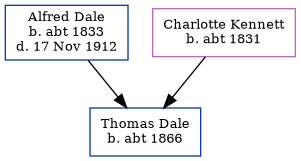

Eliza Dale c1834 -
[ Home ] | [ Calendar ] | [ Surnames Index ] | [ Census Index ] | [ Family History ]The child of Edward Dale (an agricultural laborer) and Rebecca Crockford, Eliza Dale, the three times great-aunt of Nigel Horne, was born in Kent, England c. 1834. On Jun 6, 1841, she was living in Chartham Hatch, Kent, England1.
Parents
- Edward was born in 1806
- Rebecca was born in 1805
Citations
- 1841 England, Wales & Scotland Census - Findmypast (was age 7)
Media
1841 England, Wales & Scotland Census Transcription - GBC-1841-0014002936
Family Tree
Generated by ged2site. Last updated on Jun 11, 2024